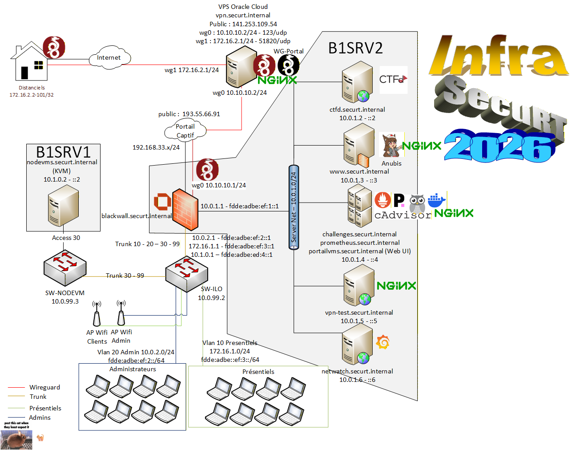
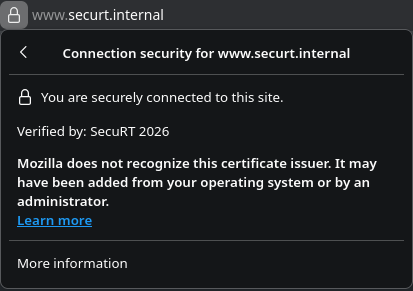
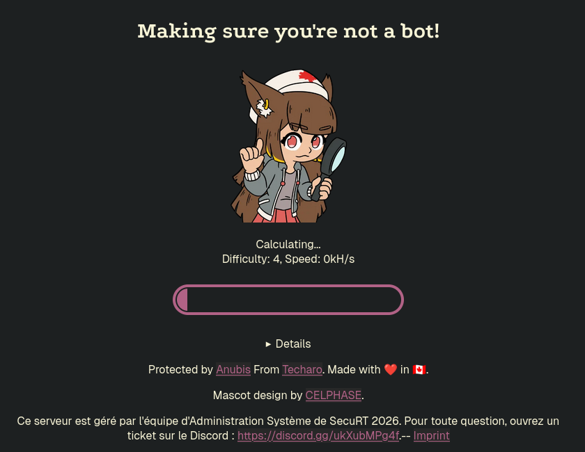
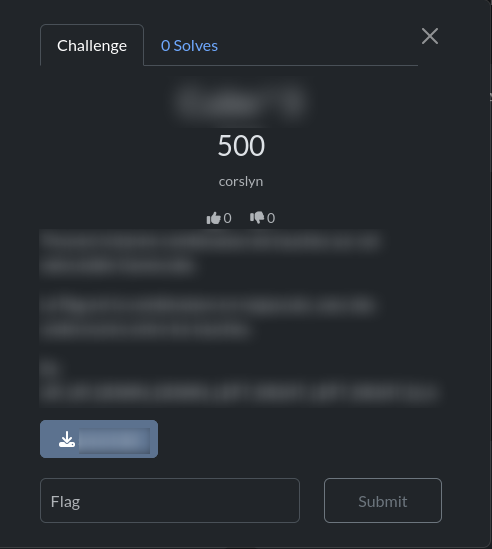

SecuRT 2026
Remise en contexte
Dans le cadre de la SAÉ 601 de notre troisième année en BUT Réseaux & Télécoms - parcours Cybersécurité - nous avons pour mission d’organiser la troisième édition du CTF SecuRT à destination des étudiants de première et deuxième année intéressés par la cybersécurité.
Qu’est-ce qu’un CTF ?
Un CTF (Capture The Flag, où dans la lingua franca la Capture de Drapeau) est une compétition de cybersécurité au cours de laquelle des participants s’affrontent sur différents challenges. Chaque défi résolu permet d’obtenir un flag (une preuve de réussite) rapportant un certain nombre de points. L’objectif est, bien sûr, d’en accumuler le plus possible.
Que suis-je en train de faire ?
Je travaille sur la mise en place de toute l’infrastructure nécessaire au bon déroulement de ce CTF.
Et comme l’a dit un grand philosophe (je crois) : “Pas d’infra, pas de CTF. Pas de CTF… pas de CTF.”
Et quand on parle d’infrastructure, on parle de TOUTE l’infrastructure :
- Le serveur principal hébergeant la plateforme de présentation et de validation des challenges
- Les serveurs annexes (supervision, hébergement des challenges…)
- L’accès à distance (administration + accès des participants)
- La sécurisation de l’infrastructure (HTTPS, pare-feu, VPN)
- Les besoins spécifiques pour certains challenges
Ce CTF aura lieu le 3 février à partir de 18h jusqu’à environ 23h, et la participation sera obligatoire pour les premières années souhaitant s’inscrire au parcours Cyber en deuxième année afin de prouver leur intérêt dans le parcours.
L’infrastructure en elle-même
Je travaille sur cette infrastructure depuis le début de l’année universitaire. Celle-ci n’a cessé d’évoluer, gagnant en fonctionnalités mais aussi en complexité. C’est pourquoi j’ai réalisé dès les premiers jours un schéma d’architecture réseau, dont voici la dernière version à ce jour :
 Figure 1 : Schéma d’architecture de l’infrastructure SecuRT
En tant qu’étudiant du parcours Cyber, il était évident que je devais sécuriser cette infrastructure de manière cohérente. Le serveur le plus sensible est celui hébergeant CTFd - la plateforme permettant la présentation des challenges et la validation des flags -, il doit donc être protégé de façon optimale.
Par exemple, afin de limiter la détection de vulnérabilités sur la plateforme, j’ai mis en place un reverse proxy, qui permet notamment de :
- sécuriser l’accès au site en HTTPS ;
- limiter le nombre de connexions simultanées afin d’éviter la surcharge du serveur.
 Figure 2 : HTTPS activé sur les sites
 Figure 3 : Rejet des requêtes trop rapides
Figure 3 : Rejet des requêtes trop rapides
J’ai ensuite déployé Anubis (https://anubis.techaro.lol/) , un programme qui s’intercale entre le reverse proxy (où se connectent les utilisateurs) et le service demandé (CTFd). Lorsqu’un utilisateur tente une connexion, Anubis lui impose un défi de Proof of Work1 exécuté côté navigateur. Ce mécanisme ajoute une latence de quelques secondes pour un utilisateur légitime, mais rend beaucoup plus coûteuses - en temps et en énergie - les attaques d’énumération, chaque tentative nécessitant la résolution préalable d’un challenge cryptographique avant d’accéder au service cible.
 Figure 4 : Anubis s’interposant à la connexion
Avec une infrastructure aussi complexe, toute défaillance d’un élément - challenge ou serveur, par exemple - doit être détectée le plus rapidement possible, afin de minimiser la durée d’indisponibilité.
Pour cela, j’ai mis en place un serveur Grafana, que j’ai découvert lors de mon travail en entreprise. Dans mon environnement professionnel, il sert à suivre la cadence de production de notre synchrone P54 (Peugeot 408). Dans cette infrastructure, je l’ai utilisé pour surveiller la disponibilité des challenges :
 Figure 5 : Tableau de bord des challenges (le chat porte-bonheur)
Figure 5 : Tableau de bord des challenges (le chat porte-bonheur)
Concernant les challenges eux-mêmes, chaque étudiant de troisième année doit en réaliser au moins un.
Si le challenge consiste en un simple fichier, celui-ci est mis à disposition sur l’interface CTFd :
 Figure 6 : Vue d’un challenge (flouté pour éviter le divulgâchage) — le bouton bleu permet de télécharger le fichier associé
Si le challenge nécessite une connexion à un service (serveur web, SSH, etc.), j’ai recommandé l’utilisation de Docker. Les conteneurs offrent une alternative plus légère et plus simple à gérer que les machines virtuelles. Le mode de connexion est ensuite précisé dans l’énoncé :
 Figure 7 : Commande de connexion (ici SSH) utilisée pour accéder au challenge
Figure 7 : Commande de connexion (ici SSH) utilisée pour accéder au challenge
Pour les personnes souhaitant participer au CTF à distance, j’ai mis en place un accès VPN basé sur WireGuard (https://www.wireguard.com/) , offrant des vitesses de connexion comparables à celles d’un accès direct.
Cette infrastructure est actuellement en phase de finalisation. Il reste à effectuer une batterie complète de tests afin de verifier le bon fonctionnement. J’ai également prévu de solliciter des camarades de troisième année, n’ayant aucune connaissance de l’infrastructure, pour réaliser un audit de sécurité afin de valider la robustesse des services.
La mise en place de cette infrastructure m’a permis de développer considérablement mes compétences en administration système et réseau, déjà mobilisées lors de notre dernière SAÉ : la SAÉ 5.01 — Concevoir, réaliser et présenter une solution technique.
J’ai pu appliquer l’apprentissage critique Mettre en œuvre des outils avancés de sécurisation d’une infrastructure réseau grâce aux solutions de reverse proxy et à l’intégration d’Anubis, ainsi que Surveiller l’activité du système d’information via l’utilisation des tableaux de bord Grafana.
-
La Proof of Work (preuve de travail) est un mécanisme de vérification basé sur le calcul. Le serveur effectue une simple opération cryptographique, tandis que le client doit réaliser des milliers, voire des millions, de calculs pour trouver une réponse valide au défi. ↩︎